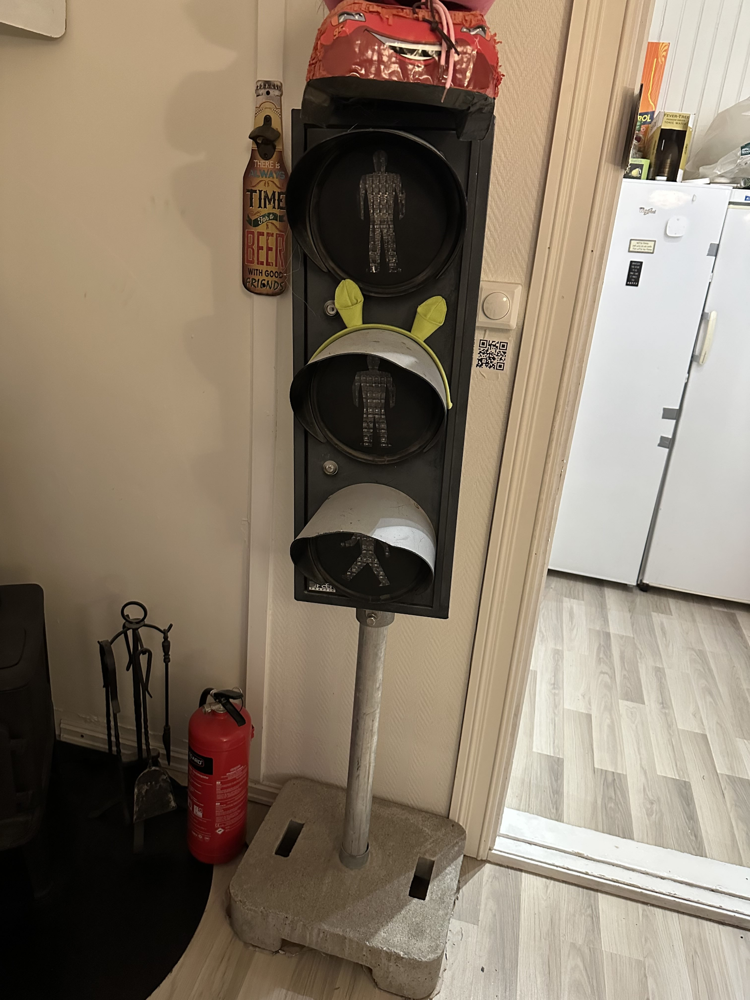
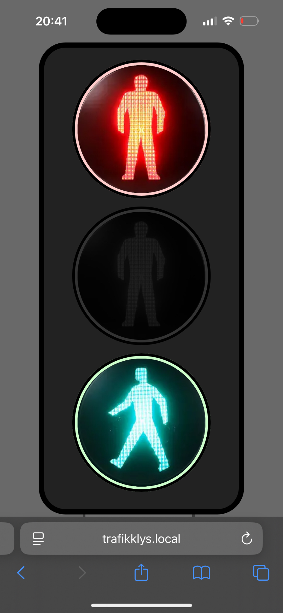
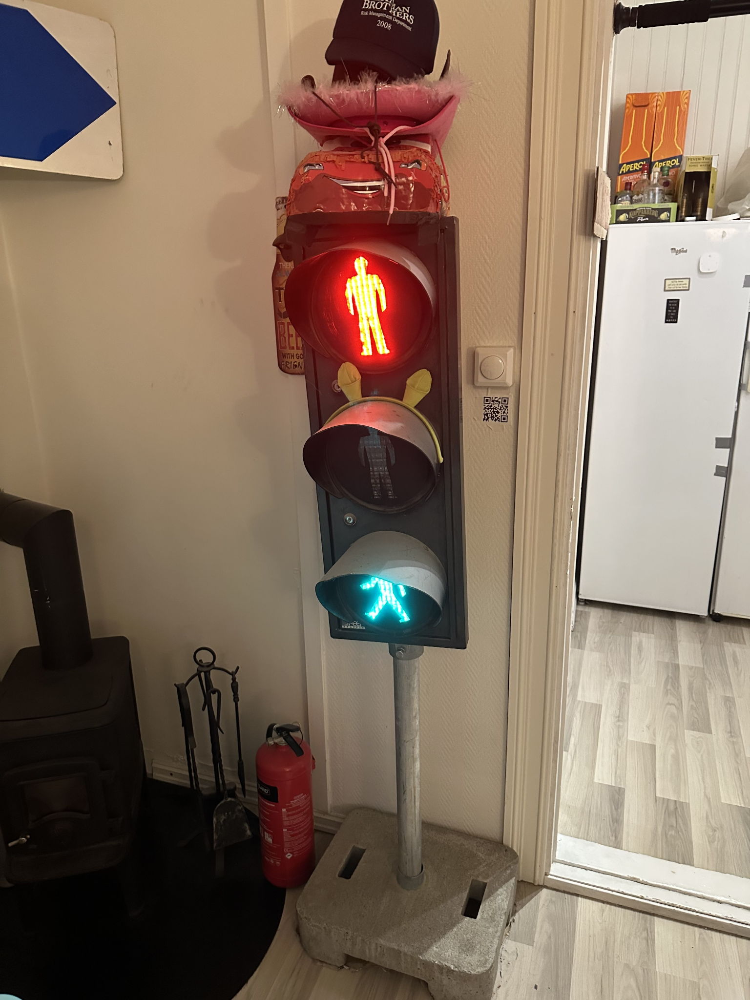

Et ekte trafikklys, under vår kontroll
Et ekte fotgjengertrafikklys dukket opp som julegave sent i 2023, lovlig anskaffet, men uten styreelektronikk. Den originale kontrolleren hadde sittet på en egen stolpe som ikke fulgte med. Prosjektet, da: få greia til å lyse, og deretter fortsette.
Steg 1: få det opp
Jeg 3D-printet et åpningsverktøy, tok fronten av og fikk oversikt over koblingen. Den originale logikken hadde bodd et annet sted; kablene som kom ut av stolpen var én per lampe, hver styrt av om den fikk 240 V AC eller ikke. Så kontroll betydde å skifte tre uavhengige nettspenningsforbindelser.

Steg 2: Raspberry Pi + reléer
- En Raspberry Pi Zero 2 sitter inne i huset. Originalkapslingen har god plass til overs, så den passer fint utenfor synet.
- Tre reléer for nettspenning, ett per lampe, styrt fra Pi-ens GPIO.
- Hver lampe er enten helt på eller helt av. Ingen PWM her, bare ren AC-skifting.
Steg 3: web-UI
En liten webapp kjører på Pi-en, servert på det lokale nettet på
trafikklys.local via mDNS. Fra hvilken som helst telefon i huset:
velg modus, kjør en sekvens, utløs engangs-effekter.

trafikklys.local. Direkte lampekontroll fra hvilken som helst telefon på LAN-et.
Steg 4: Sonos-reaktiv festmodus
Koblet til rommets Sonos-system. Lyset blinker i takt med det høyttalerne spiller, og en egen «drikkeleker»-modus kjører skriptede tidssekvenser: grønt når det er din tur til å drikke, rødt når det ikke er det. Den klart mest brukte funksjonen, og slår både den opprinnelige lampefunksjonen og den musikkreaktive modusen.

Det jeg lærte
At maskinvareprosjekter trenger en produkthjerne, ikke bare en ingeniørhjerne. Funksjonen jeg så for meg som hovedsaken (musikkreaktiv) ble vist frem én gang og aldri etterspurt igjen. Den skriptede festmodusen er det folk faktisk bruker. Og: når lasten er nettspenning, bruker du mer tid på å dobbeltsjekke relékoblingen enn på å være smart i programvare. Det er et godt forhold.
Ærlig talt var hele prosjektet mye enklere enn jeg forventet.
Rapport
En kort norsk skriveøvelse med bilder av lyset i hver tilstand ligger i repoet: